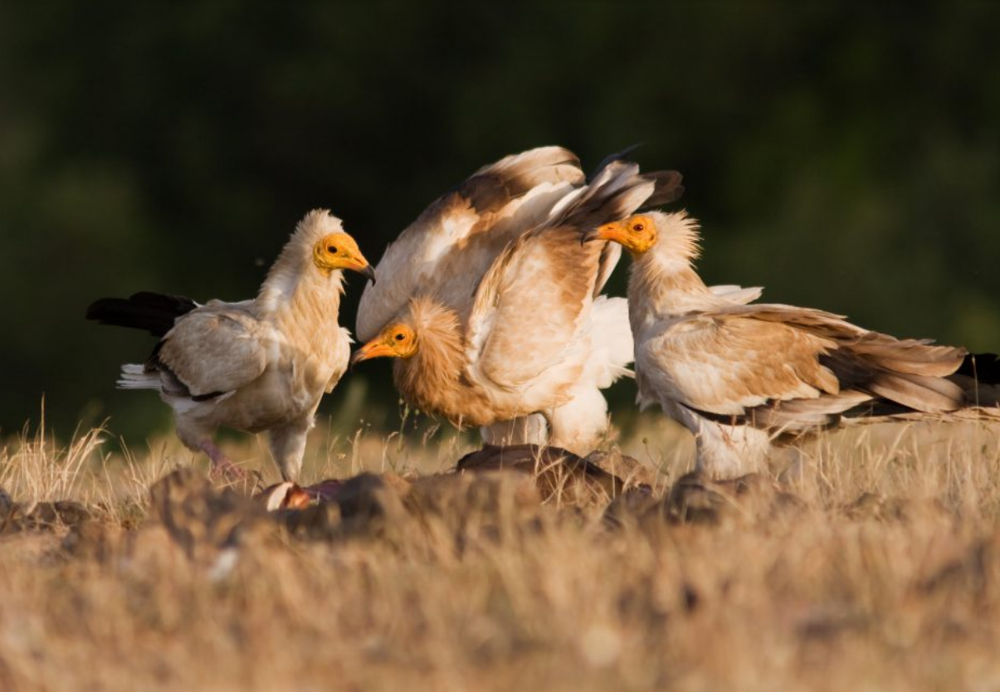
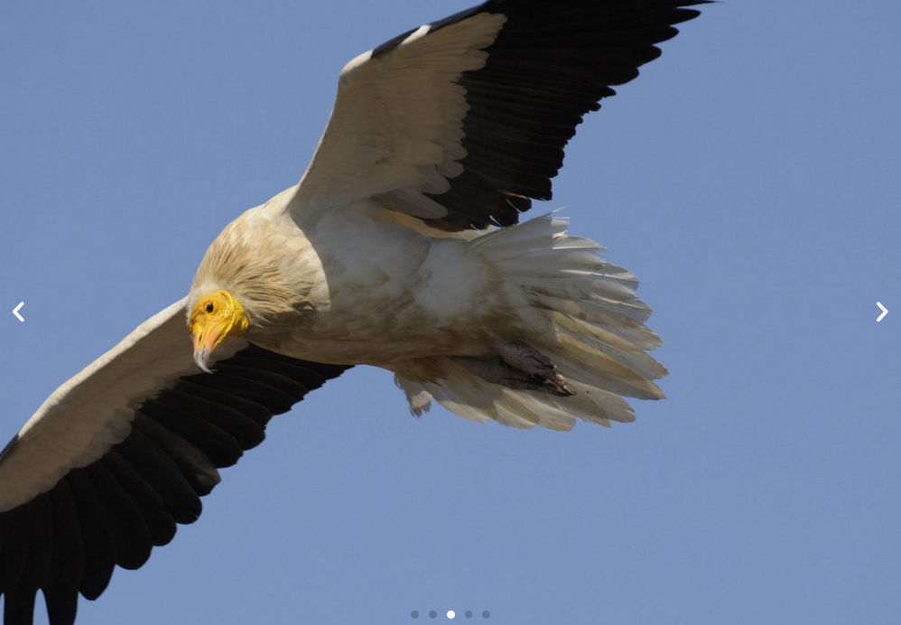
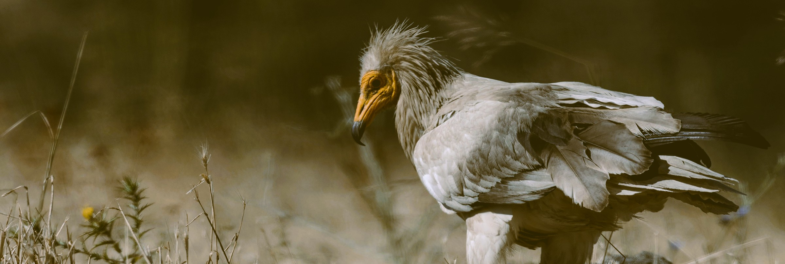

The Egyptian Vulture is the world’s only tool-using vulture and Europe’s smallest and only true long-distance migratory vulture. The species is considered globally endangered and is the only European vulture which population is declining. The good news is that many conservation initiatives are currently working to preserve and boost the Egyptian Vulture population in Europe and beyond.

The population of Egyptian Vultures in Europe is in crisis, with a dramatic 50% decline in the last 40 years across its range and 80% decline in the numbers found on the Balkan Peninsula alone.
Around 80% of the population left in Europe are found on the Iberian Peninsula, with the remaining populations across the range isolated and highly fragmented. Europe’s migratory vulture is facing pressure not just in Europe but across its entire migration flyway.
The loss of habitat, decrease in food supply, collisions with electricity infrastructure and poisoning from the use of agricultural chemicals in both Europe and in sub-Saharan Africa are all threats faced by these small vultures. Their annual migration also poses significant risks with over 50% of young birds not surviving during their first travels to their overwintering grounds.
Efforts to strengthen the populations of Egyptian Vultures have been taking place since the beginning of the 2000s with projects funded by the European Union’s LIFE programme and national governments in France, on the Canary Islands in Spain, Italy and in the Bulgaria.


Before being decommissioned a 30 kilometre-long line between Port Sudan and the Red Sea coast - called the 'killer power line' is estimated to have electrocuted hundreds and perhaps thousands of Egyptian Vultures since its construction in the 1950s
This vulture species is considerably smaller than the other vultures in Europe. Adult animals have a bald yellow head and throat, and a white-collar. The plumage is a creamy white, in sharp contrast with the black wing coverts. Young birds are brown with paler wing coverts and slowly whiten with each mould. Like Bearded vultures, Egyptian vultures sometimes rub themselves with soil rich in ferric oxides, hence the German name ‘Schmutzgeier’.
During the last decades, the number of Egyptian vultures declined dramatically in Europe. The largest European population is located in Spain (1300 to 1500 pairs). Except in France, where there are currently around 70 breeding pairs, the number of birds across Europe is still decreasing sharply, with over 50% in the last three generations.
Egyptian vultures are opportunists and eat very varied. Their diet consists mainly of carrion, but also small mammals, young birds, fish, eggs and even rotting fruit. The species can fly up to 80 kilometers per day in search of food. Due to their smaller size, Egyptian vultures must often wait for other species to have finished eating. The thin beak is perfectly adapted to catch the small pieces of leftover meat on carcasses. Also, they can break an egg by repeatedly dropping stones on it. The Egyptian vulture is the only European vulture that migrates to Africa in winter. This is why they breed later in the year than other vulture species, and lay on average two eggs in April or May. Pairs build nests together, in rocky areas, often on cliffs.
Species Action Plans are very important strategic documents that frame the priorities for further species conservation work. They are created by conservation partners, scientists, charities, governments and local groups and are tools for identifying and prioritising measures to restore the populations of vultures across their range. They provide information about the status, ecology, threats and current conservation measures for each species of vulture and list key actions that are required to improve their conservation status.
The Vulture Conservation Foundation co-developed the Vulture Multi-Species Action Plan (Vulture MsAP), which was adopted by the United Nation’s Convention on the Conservation of Migratory Species of Wild Animals (CMS), aiming to conserve all 15 African-Eurasian vultures species, including the Egyptian Vulture.
Sign up to our email list to receive the latest news about vultures and our work!